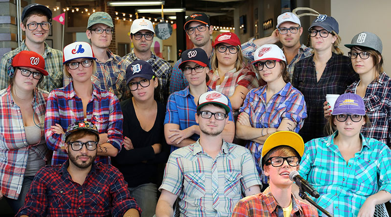

Nora & myself are packing up and shipping off to Austin, TX in late March. It was a tough decision, full of bittersweet realizations and reflections on good experiences, but it's time to move on and start a new chapter. PigCat is kinda glad too.

The LivingSocial UX team is my second family. I almost can't bear the thought of being apart. They have been mentors, peers, resources, but above all, friends. Whatever the distance, it doesn't matter, these people are as close to my heart as it gets and I will miss them dearly.

It's not "good bye", it's "see you around". DC has done so much for me and I can't wait to see what happens next.